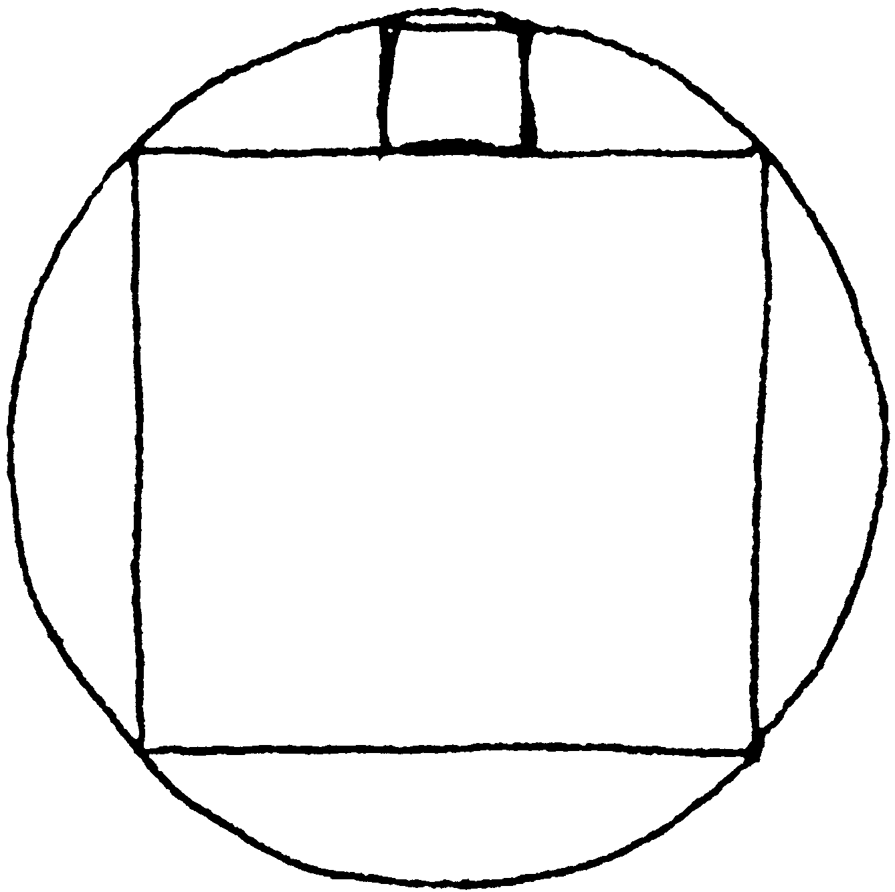
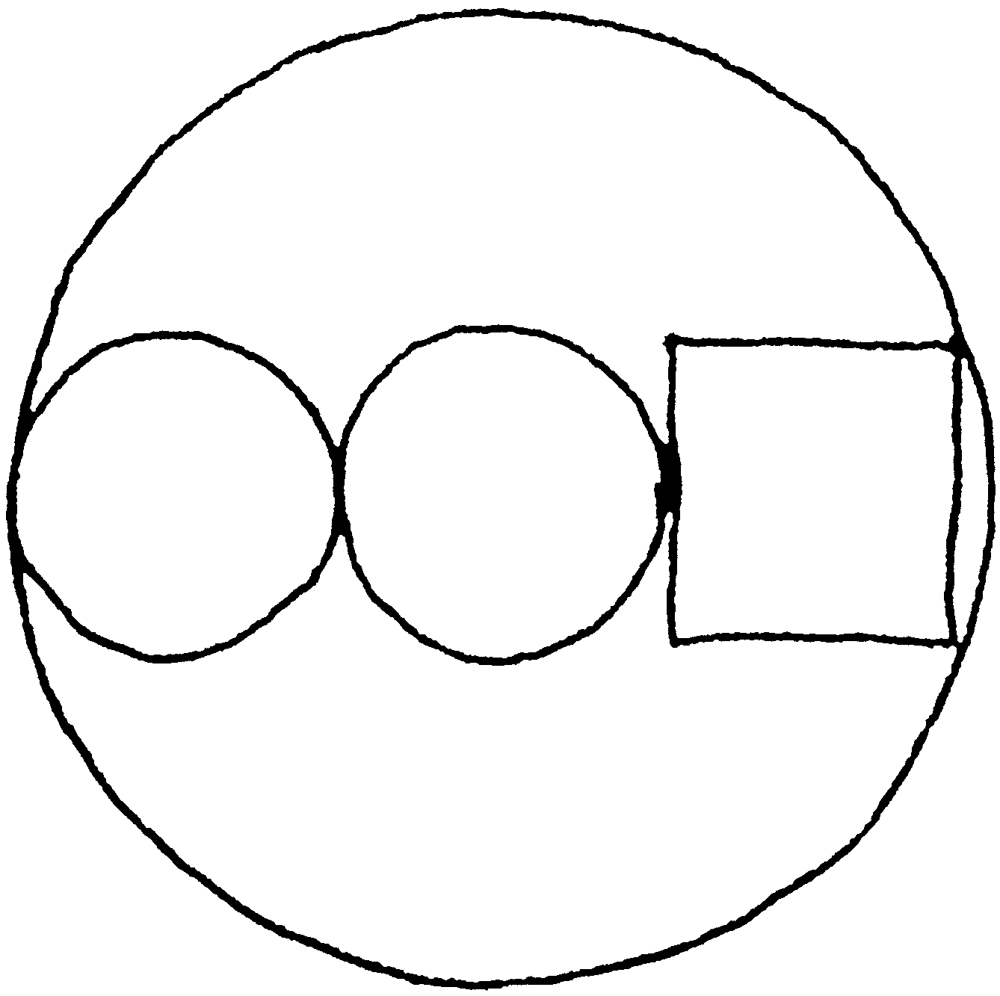
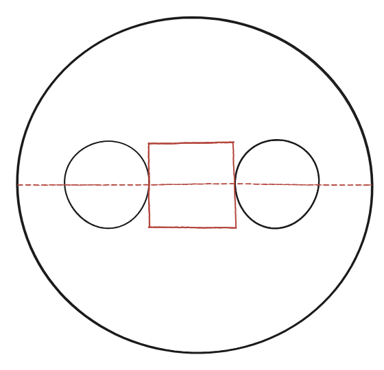
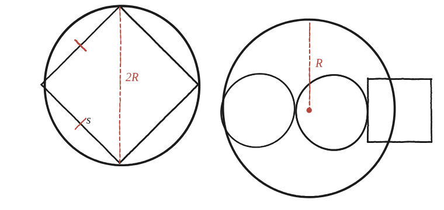

Dues de les meves preferides.


Què demanen aquests dos dibuixos
Cap dels dos panells porta enunciat escrit: cal llegir la pregunta directament del dibuix. Totes dues figures amaguen la mateixa pregunta de fons que q27: mesurar el radi petit en funció del gran. El primer panell mostra un quadrat inscrit en una circumferència (els 4 vèrtexs sobre el cercle); el segon, un quadrat i dos cercles petits en fila, tots tres dins d'una circumferència gran més gran que els engloba.
Panell 1 — el quadrat inscrit
La clau és que la diagonal del quadrat és el diàmetre del cercle: els quatre vèrtexs toquen la circumferència, i la diagonal —que passa pel centre— hi arriba de banda a banda. Si el costat del quadrat és s i el radi del cercle és R, la diagonal fa s√2 (Pitàgores sobre mig quadrat: dos costats s formant un angle recte) i, alhora, val 2R. D'aquí surt directament la relació entre els dos: 2R = s√2, és a dir, R = s√2⁄2.
Panell 2 — quadrat i dos cercles en fila
Aquí les incògnites són R (el radi del cercle gran) i r (el radi comú dels dos cercles petits), i necessitem una equació que les lligui. El quadrat té costat 2r —igual que el diàmetre comú dels dos cercles petits, ja que hi encaixa exactament entre ells— i tot el conjunt (cercle + quadrat + cercle) travessa el diàmetre del cercle gran d'una banda a l'altra.
Comptant al llarg d'aquest diàmetre: un radi r de marge (del cercle petit de l'esquerra), el costat del quadrat 2r, i un altre radi r de marge (del cercle petit de la dreta) —en total r + 2r + r = 4r— ha de fer exactament 2R, el diàmetre del cercle gran. La relació queda 2R = 4r, és a dir, R = 2r: el radi gran és sempre el doble del radi petit, independentment de la mida concreta.

El mateix moviment en totes dues
Els dos panells —i tota aquesta família de puzles de cercles tangents que inclou també q22 i q27— es resolen sempre amb el mateix moviment: connectar centres, trobar-hi un triangle rectangle amagat (o, com al panell 1, una diagonal que fa de diàmetre) i aplicar el teorema de Pitàgores o una simple suma de longituds sobre una línia recta.

Panell 1: R = s√2⁄2 (la diagonal del quadrat inscrit és el diàmetre). Panell 2: R = 2r (el radi gran és sempre el doble del petit). Totes dues surten de connectar centres i mesurar sobre una línia recta, el mateix moviment que a q22 i q27.
Comprovació
Amb un quadrat de costat s=4 al primer panell: la diagonal val 4√2, per tant R=2√2≈2,83 —una xifra que es pot verificar mesurant directament sobre el dibuix.